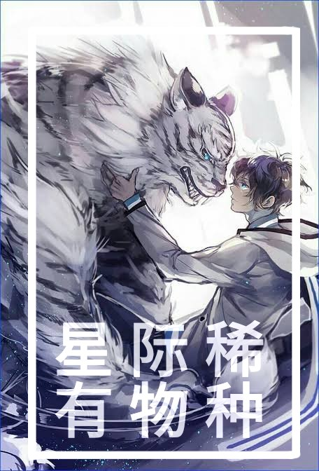

Cuando Gu Yu se despertó, se encontró transmigrado a un planeta hombre bestia y convirtiéndose en una 'mujer artificial' entregada al mariscal imperial.
Estremecimiento.
Mientras que los machos en Brilliant Splendor son tan capaces que pueden cambiar libremente de forma de bestia a humana, las hembras eran demasiado frágiles en forma humana y perdieron la capacidad de convertirse en humanos durante la catástrofe.
Era el deseo más común de los machos: que sus parejas tuvieran forma humana.
Para satisfacer este deseo, apareció en el mercado un nuevo producto: las hembras artificiales, robots biológicos idénticos a las hembras humanas naturales, equipados con chips inteligentes y capaces de responder a estímulos.
Planet Law estipula que, para garantizar la tasa de natalidad de los jóvenes, si uno no se casa solo a la edad de ochenta años, Star Network le otorgará una pareja.
El primer soltero de mayor edad de Brilliant Splendor, Marshal Cyno Bruce, tomó una decisión que conmocionó a la cadena cuando estaba a punto de cumplir ochenta años.
– Casarse con una mujer artificial.
Cyno: ¡Cásate con una mujer bestia, de ninguna manera! ¿En cuanto a las hembras artificiales? Bueno, es barato y no será un estorbo.
Luego…
¡Realmente fragante! _(:з”∠)_ ¡Bebé, déjame abrazarte!